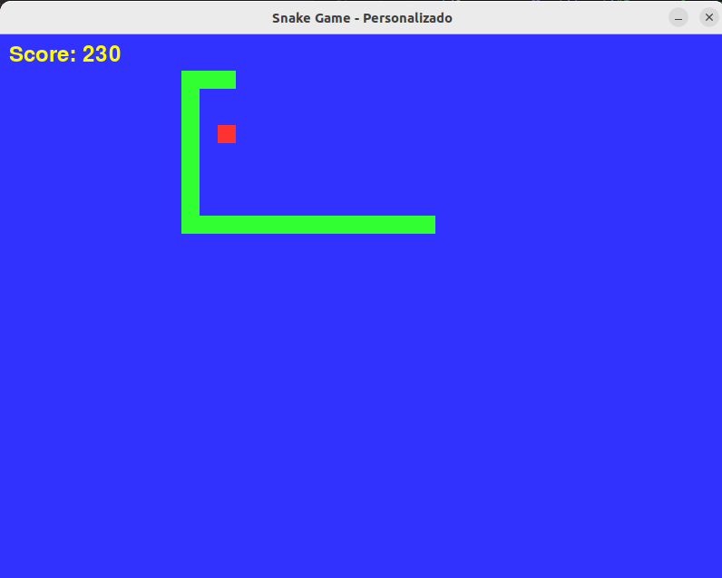

Snake Game
Este fue el primer juego que desarrollé. En él, el objetivo es hacer crecer a la serpiente al comer los objetos que aparecen en la pantalla para conseguir puntos. La dificultad aumenta conforme avanzas, ya que la serpiente no puede chocar ni contra las paredes ni contra su propio cuerpo. A medida que obtienes más puntos, la serpiente se alarga, haciendo el juego cada vez más desafiante.